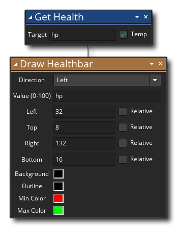

描述
你可以使用此动作来获得物体的“健康”变量。你还需要给出目标变量来存储“健康”值，此变量可以是临时局部变量。如果此变量在之前未被创建（使用 设置健康值） 那么此变量将被创建，但动作返回值将是0。这不像其它实例变量，如果它们未被创建而想获取返回值，那么将给出错误。
动作语法：

参数：
参数 描述 目标 用来储存“健康”值的目标变量 (可以标记为临时局部变量)
例如：
上述动作块代码将获取"健康"值并将它存储在临时局部变量中。此值将在之后被用来绘制健康条。
你可以使用此动作来获得物体的“健康”变量。你还需要给出目标变量来存储“健康”值，此变量可以是临时局部变量。如果此变量在之前未被创建（使用 设置健康值） 那么此变量将被创建，但动作返回值将是0。这不像其它实例变量，如果它们未被创建而想获取返回值，那么将给出错误。
参数 描述 目标 用来储存“健康”值的目标变量 (可以标记为临时局部变量)
上述动作块代码将获取"健康"值并将它存储在临时局部变量中。此值将在之后被用来绘制健康条。